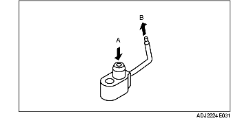

Oil jet valve inspection 1. Apply 230 kPa {2.35 kgf/cm2, 33.4 psi} or more of compressed air to oil jet valve A and verify that air passes through oil jet valve B. If this cannot be verified, replace the oil jet valve. 